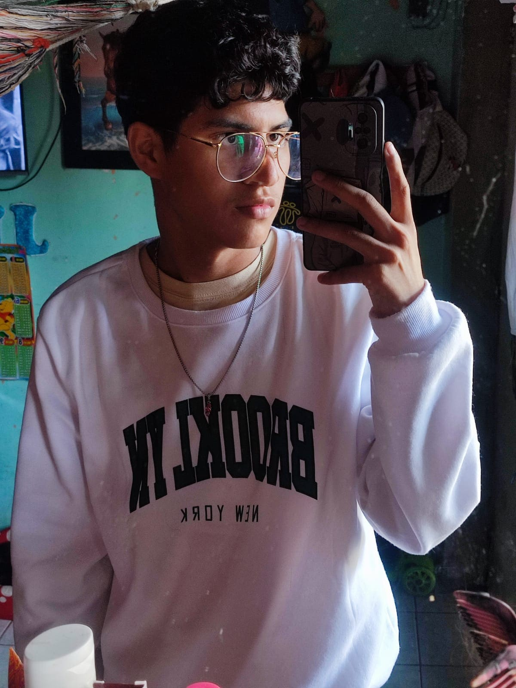
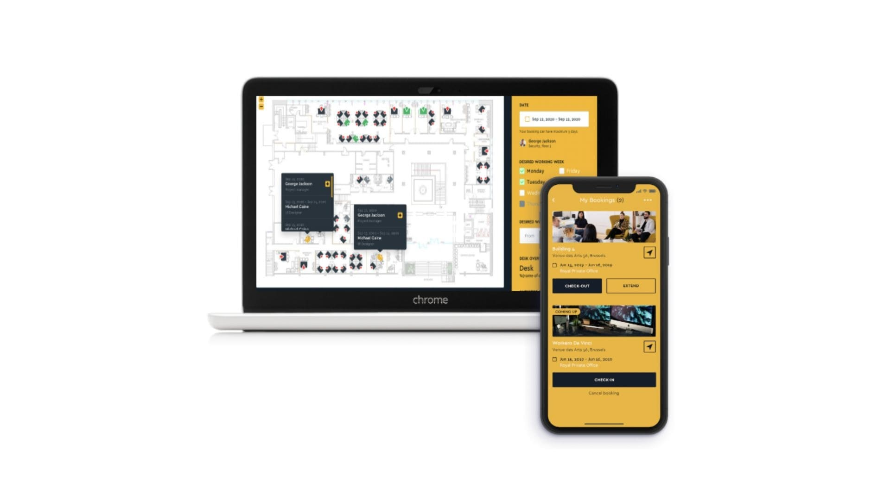
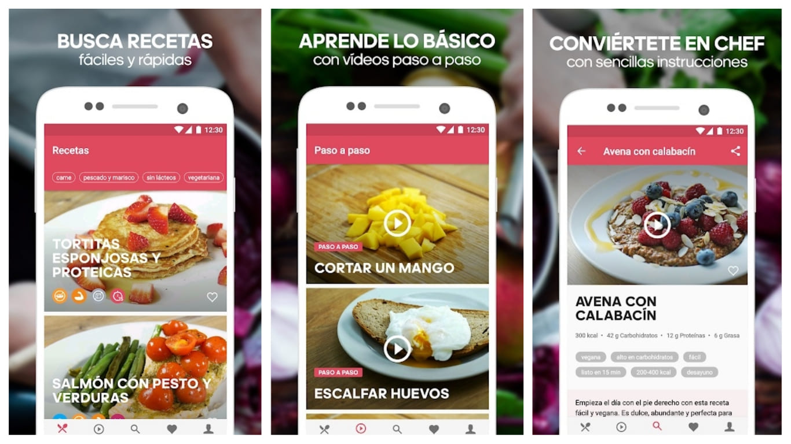
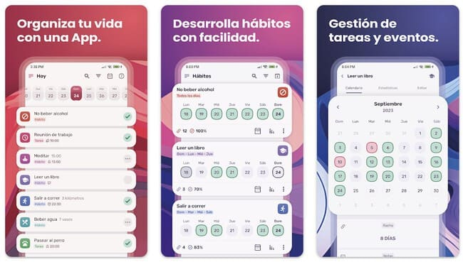

Mi nombre es Andy Montero Alava, nací el 17 de junio del 2005, tengo 19 años y soy del Cantón Baba. Estoy cursando el 3er Semestre de la carrera Sistemas de Información en la Universidad Técnica de Babahoyo. Me encanta la tecnología y el desarrollo de software. Siempre busco aprender y mejorar mis habilidades en programación y gestión de proyectos.
Inicio
¡¡Hola! Este es mi portafolio personal, donde podrás conocer más sobre mí, mis habilidades y mis proyectos
Sobre mí
Habilidades
Aquí están algunas de mis habilidades, entre ellas:
| Habilidades / Competencias | Nivel |
|---|---|
| Programación en Java y HTML | Intermedio |
| Conocimientos básicos en Front-End y Back-End (CSS, PHP, JavaScript) | Básico |
| Manejo de herramientas como Visual Studio Code, NetBeans y PSeint | Intermedio |
| Adaptabilidad para trabajar en equipo y comunicar ideas claramente | Intermedio |
| Capacidad para organizar y distribuir tareas en proyectos grupales | Intermedio |
| Matemáticas (razonamiento lógico y resolución de problemas) | Intermedio |
| Autoeducación mediante investigación y videos educativos | Intermedio |
Galería de Proyectos
A continuación, presento una selección de proyectos en los que he trabajado, incluyendo una breve descripción y una imagen de cada uno.
Proyecto 1: Aplicación de Reserva de Mesas
Desarrollé una aplicación que permite a los usuarios reservar mesas en restaurantes de manera sencilla y rápida, mejorando la experiencia del cliente.
Proyecto 2: Aplicación de Recetas Saludables
Una aplicación que sugiere recetas saludables personalizadas según preferencias alimenticias.
Proyecto 3: Aplicación de Seguimiento de Hábitos
Este proyecto consiste en una aplicación móvil diseñada para ayudar a los usuarios a establecer y seguir hábitos saludables. La app permite a los usuarios registrar sus hábitos diarios, como el consumo de agua, la actividad física y la meditación. Además, ofrece recordatorios y gráficos de progreso para motivar a los usuarios a cumplir con sus objetivos.
